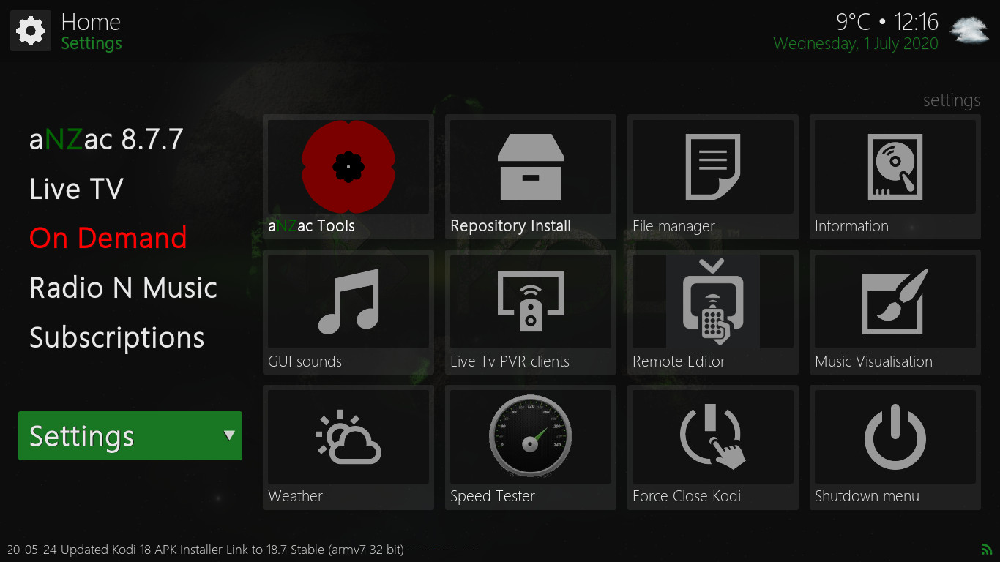
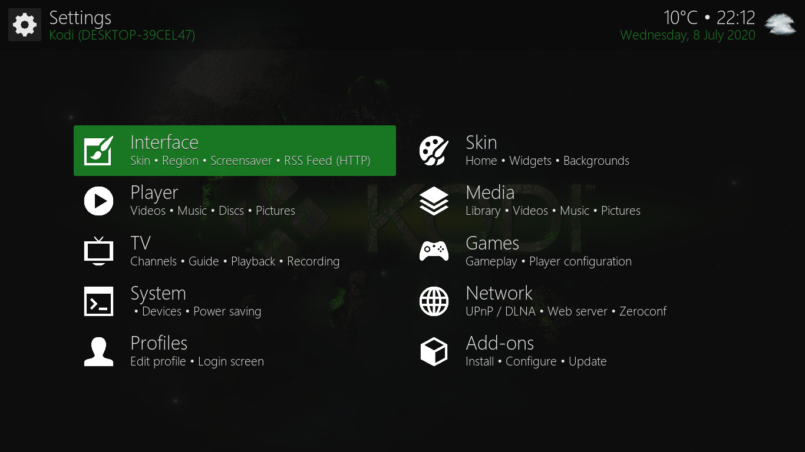
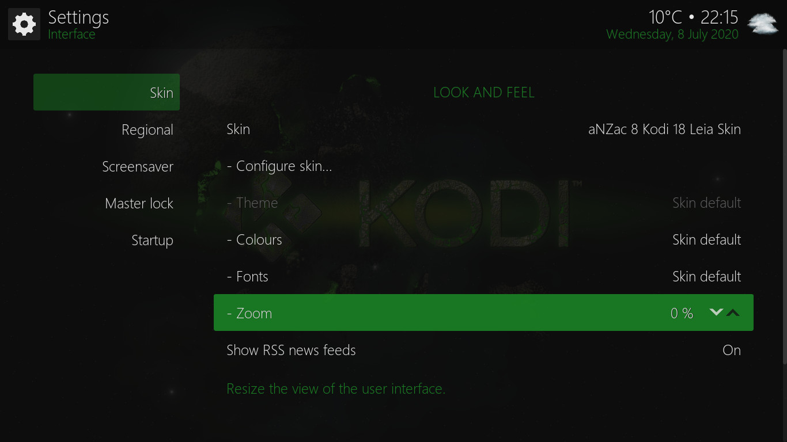

aNZac Build
a Kodi
build for the lands down under
Please Note:
aNZac Build is a collection of third party
Kodi media player add-ons that search
the Internet and provide links to on-line content that is publicly available.
aNZac Build is not responsible for the content streamed to your device and neither does it condone piracy so you must
satisfy yourself that either you or the sites accessed for streaming have the copyright agreements in place and are entitled to access this content.
aNZac Build does not host or upload any video, films, media file, live streams
(avi, mov, flv, mpg, mpeg, divx, dvd rip, mp3, mp4, torrent, ipod, psp).
aNZac Build is not responsible for the accuracy, compliance, copyright, legality, decency, or any other aspect of the
content streamed to or from your device. If you have any legal issues please contact the appropriate media file owners or host sites.
aNZac Build has no control over the links on any site that it provides a link to. If you see any form of infringements,
please contact the appropriate media file owners or host sites immediately.
Guides for aNZac Build
Tips for aNZac Build
This section contains Tips and Guides to help you get the most out of aNZac Build as well as trouble
troubleshooting and general instructions.
Navigation: If you are using a keyboard to control Kodi the arrow keys navigate up, down, left and right. The
Enter Key is 'OK' and Backspace is 'BACK'. The Minus Key (-) is 'Volume Down' and the Plus Key (+) is
'Volume Up'. The Backslash Key (\) toggles between full screen and windowed mode.
Stream Playback
General stream playback controls
Press LEFT or RIGHT to seek backwards or forwards through a stream.
if you press RIGHT the stream will jump forward a bit. You can press repetitively to jump as far as you need.
Pressing LEFT jumps the stream back.
Press OK to open the in-stream controls. The control options vary depending on the stream type and encoding used.
Below is a breakdown of the control options available for the pictured stream. Press BACK to close the in-stream controls
Audio settings | Video settings | Color settings | Favorites | Start | Rewind | Play/Pause | Fast Forward | End | Subtitles | Info
Change stream language (if available)
Some streams are encoded with more than one audio language. if your stream is not playing in the correct language you can try these steps
to see if an alternate language is available
Press OK to open the in-stream controls and navigate LEFT to 'Audio settings' and press OK. (pictured left)
Now navigate DOWN to 'Audio stream ...' and press OK. (pictured right)
Now navigate to the required language and press OK to select the language (pictured left)
Now press RIGHT to navigate to 'Close' and press OK. (pictured right)
Press BACK to close the in-stream controls.
Turn off subtitles (if turned on)
Press OK to open the in-stream controls and navigate RIGHT to 'Subtitles'. (pictured left)
Now navigate DOWN to 'Enabled On' and press OK to switch off. (pictured right)
Press BACK to close the in-stream controls.
Settings
Accessing the aNZac Build Settings Menu


To access the aNZac Build Settings menu navigate down to 'Settings' and press OK twice. (pictured left)
The Settings menu will now open so you can adjust all aspects of the system. (pictured right)
Note: Adjusting some of these settings may make your device unusable. Adjust with caution.
Adjust the screen size to fit your TV

Navigate to 'Settings' and press OK twice. Now navigate to 'Interface' and press OK (this should already be selected. (pictured left))
Now go RIGHT and DOWN to 'Zoom' and adjust to suit using the left and right arrows and the OK button. (pictured right)
Note: When finished press BACK twice to return to the main menu.
Addon Updates (Check and Install)
 Navigate to 'Settings' and press OK twice. Now navigate right and down to 'Add-ons' and press OK. (pictured left)
Navigate to 'Settings' and press OK twice. Now navigate right and down to 'Add-ons' and press OK. (pictured left)
Now press LEFT and navigate down to 'Check for updates' and press OK. (pictured right)
Note: When finished press RIGHT to return to the main 'Add-ons' menu.
Navigate to 'Available updates' and press OK. (pictured left) If you don't see this there are no add-on updates available.
Now navigate to 'Update all' and press OK to install available updates. (pictured right) Updates will now download and install.
Note: When finished press BACK thrice to return to the main menu.